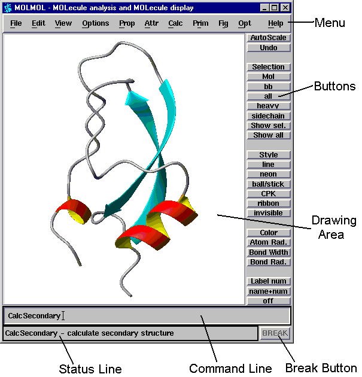

Main Window Elements
The following image shows a screen dump of the MOLMOL main
window, with annotations for its elements. Each of them
will be briefly explained in the following sections.

When you start up MOLMOL for the first time, you will see
two dialogs boxes in addition to the main window. If you
prefer not to see them each time you start the program,
you can disable them using the UserInterface
command, and choose the option to save the program state
when you quit the program. You can do the same if you
do not want certain parts of the main window to appear.
Drawing Area
All graphical display of molecules (and other items)
will appear here. You also use this area for interactive
mouse manipulations, like zooming and
rotating.
Menu
The menu contains all MOLMOL commands, you use the common
navigation methods known from other programs to access
commands in the menu. The following is a short overview of
which kinds of commands can be found in which pulldown menu:
- File
- Input and output of files. This includes reading and
writing of molecules in many formats, output of plots,
execution of macros, and a variety of other commands.
- Edit
- Commands that modify molecules. This includes
commands that change the covalent structure (adding
and removing atoms and bonds, building molecules
from residues, etc.) and commands that modify
coordinates (rotation, translation, changing dihedral
angles, superposition, etc.).
- View
- Commands that change global viewing parameters.
This includes zooming, camera and light source
parameters, clipping planes and fog.
- Options
- Commands that change various kinds of configuration
options and preferences. This includes the choice
whether certain dialogs are displayed, selection of
stereo and animation modes, rendering options,
display quality, plot parameters, and path names of
configuration files.
- Prop
- Commands that change or list properties. Properties
are boolean values that can be set for various data
items, they are mainly used for
Selection.
- Attr
- Commands that change graphics attributes, like
colors, display styles, material properties, etc.
- Calc
- Commands that perform calculations. A large
variety of calculation and analysis possibilites
for molecules can be found here.
- Prim
- Commands that create and modify primitives.
Primitives are things that can be displayed, but
are not molecules. This includes annotations,
schematic displays (ribbons) and surfaces.
- Fig
- Commands that draw figures used for the analysis
of molecules. This includes Ramachandran plots,
angle distribution plots, contact maps, etc.
- Opt
- This menu appears when optional commands are defined
as part of the startup macros, and those commands are
not contained in any other menu. See the section on
configuration for information on
how to extend the program with optional commands.
- Help
- Commands for access to various forms of
online help.
Buttons
The buttons give quick access to some frequently used
(combinations of) commands. You can use the HelpButton
command to see how exactly the buttons are defined.
Command Line
As well as selecting them from the menu, all commands can
also be entered on the command line. Parts of commands that
are unique are completed automatically while typing. You can
also enter command arguments on the command line.
Status Line
A short help message is displayed here while the mouse
pointer is moved over menu entries or buttons, or when a
command is entered on the command line. Some commands also
display informative messages on the status line.
Break Button
Most long running commands can be interrupted by clicking
the mouse on this button. The button will be active while
such a command is running, inactive (grayed out) otherwise.
Last modified: Mon Jan 20 19:44:56 CST 2003
Reto Koradi, kor@mol.biol.ethz.ch